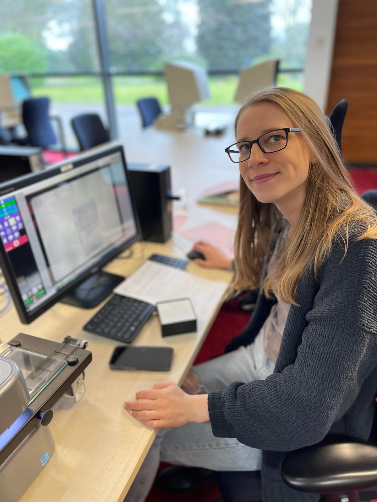

Research Services
My work combines traditional, document-based research with genetic genealogy to build family trees and conclusions that are structured and backed by evidence. Take a look at my services and specialities below. If you have any questions, please feel free to reach out!
Adoption & Unknown Parentage
These cases require discretion and methodical evidence-building. Whether you’re looking for a biological parent or want to know more about an adoption from a hundred years ago, I use all the resources at my disposal to piece together the strongest possible case supported by verifiable records. I build carefully structured cases using:
- DNA clustering techniques
- Family tree reconstruction of matches
- Timeline and geographic comparison
- Civil registration and corroborating documentation
- Indirect evidence and elimination methodology
Genetic Genealogy
DNA is a powerful research tool not only for adoption cases, but for solving complex family questions that span generations. I analyze DNA matches to
- Break through brick walls
- Confirm or challenge existing research
- Identify shared ancestors
- Reconstruct extended family networks
- Support documentary findings with genetic evidence
Genetic genealogy allows us to see patterns that traditional records cannot reveal, but it is most effective when combined with careful documentary research.
Document-Based Research
Traditional archival research forms the foundation of my work. I locate and evaluate original records to build conclusions that can be trusted. I conduct a thorough investigation of original records, including but not limited to:
- Civil registrations (birth, marriage, death)
- Parish and church records
- Probate records and wills
- Census and electoral rolls
- Military, land, and court records
- Newspaper archives
- Immigration and passenger lists
- Local archival collections
Brick Wall and Complex Cases
I re-evaluate evidence, reconstruct family networks, and test multiple hypotheses to break through difficult research problems. I aim to:
- Reconstruct entire family networks to identify one individual
- Analyze migration patterns
- Identify naming traditions and kinship structures
- Evaluate conflicting or incomplete records
- Develop and test multiple research hypotheses
International & Multi-Regional Research
I have conducted genealogical research across multiple regions, each with its own archival systems, languages, and historical complexities. These regions include, but aren’t limited to:
- North America (including Mexico)
- Puerto Rico and parts of the Caribbean
- Western Europe
- Select regions of Eastern Europe (depending on the survival of records)
- Australia
- New Zealand
Historical Context & Narrative Reporting
My reports may include:
- Social and economic background
- Occupational research
- Geographic and community context
- Historical events influencing family movement
- Clearly written research summaries with full citations
My Research Approach
I prioritize evidence over assumption in every case. My research is guided by a structured plan, supported by transparent analysis, and fully documented with proper source citations. I handle sensitive discoveries with care and provide realistic, honest evaluations of what the records can, and cannot, prove. I am honest about the limits of genealogy and how those limitations may influence the outcome of your research.



Let’s explore your story together
If you’re curious about your roots or facing a stubborn brick wall, I’d love to help.
Book a free consultation